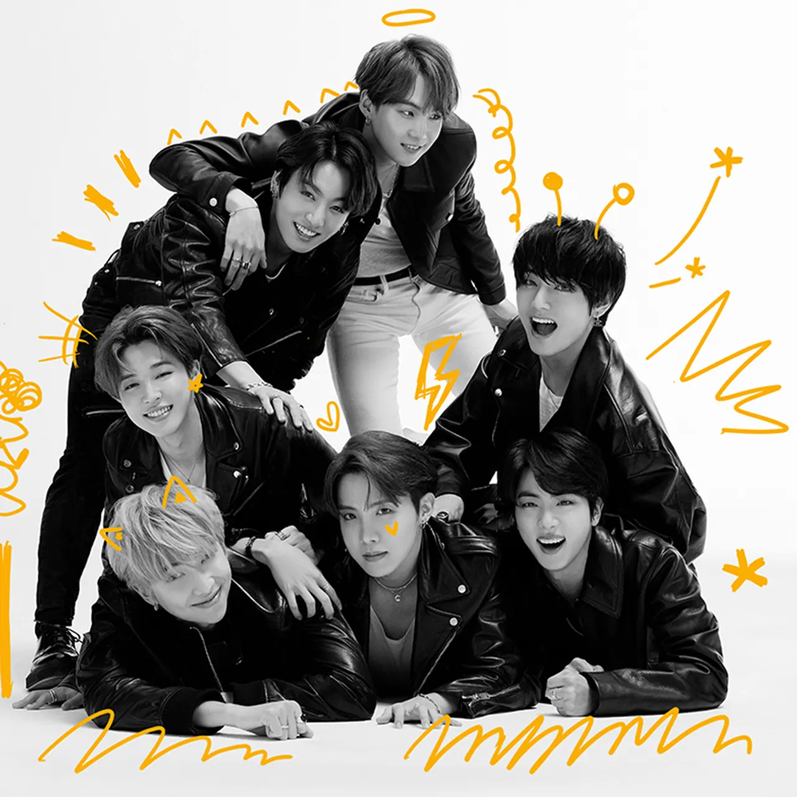

BTS was formed in 2010, after Big Hit Entertainment CEO Bang Si-hyuk wanted to form a hip hop group around RM (Kim Nam-joon), an underground rapper who was well known on the music scene in Seoul. BTS was originally supposed to be a hip hop group, but, seeing falling album sales, he changed his plans, thinking a different path would be more marketable. He chose to vary from the usual, highly regimented idol groups and create one where the members would be individuals rather than an ensemble, and free to express themselves. Auditions were held in 2010 with plans to launch the following year. The band members lived together, practicing up to 15 hours a day, and first performed before a small crowd of industry insiders in 2013.

|  |
BTSAs a person that found herself alongside BTS back in 2015 and has felt I have grown as a person alongside them, their music has always meant so much to me. It’s been hard to watch them shift focus from such important relatable topics to bubblegum pop English singles. It’s understandable from the perspective of trying to reach the peak of winning a GRAMMY, but let’s all be honest with ourselves, the GRAMMYs are rigged just like every other award system. It should not be considered the pinnacle of a musical career. BTS’s growth is something no one could predict. The reason they grew so much is that their messaging and music have been authentic and brought comfort to millions, and that is what makes for such an unforgettable artist. We know they’re destined for great things, even as solo artists. This is not the end for BTS, and the media should stop portraying it as that. |